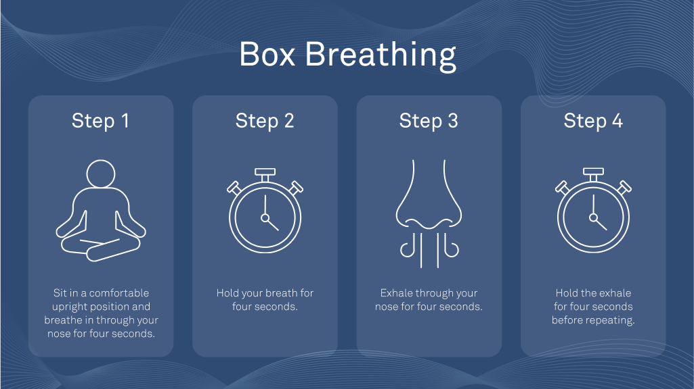

Breathe in
Inhale slowly through your nose for four comfortable counts.
MINDFUL BREATHING
Use this short practice to slow your pace, relax your shoulders, and create a little more space in the moment.
Back to mindfulnessGUIDED PRACTICE
Follow four equal steps: breathe in, hold, breathe out, and hold again. Stay comfortable and return to your natural rhythm whenever you need to.

THE RHYTHM
Inhale slowly through your nose for four comfortable counts.
Keep the breath gently held for four counts without tensing.
Exhale slowly through your nose for four steady counts.
Pause for four counts before beginning the next round.
HELPFUL REMINDERS